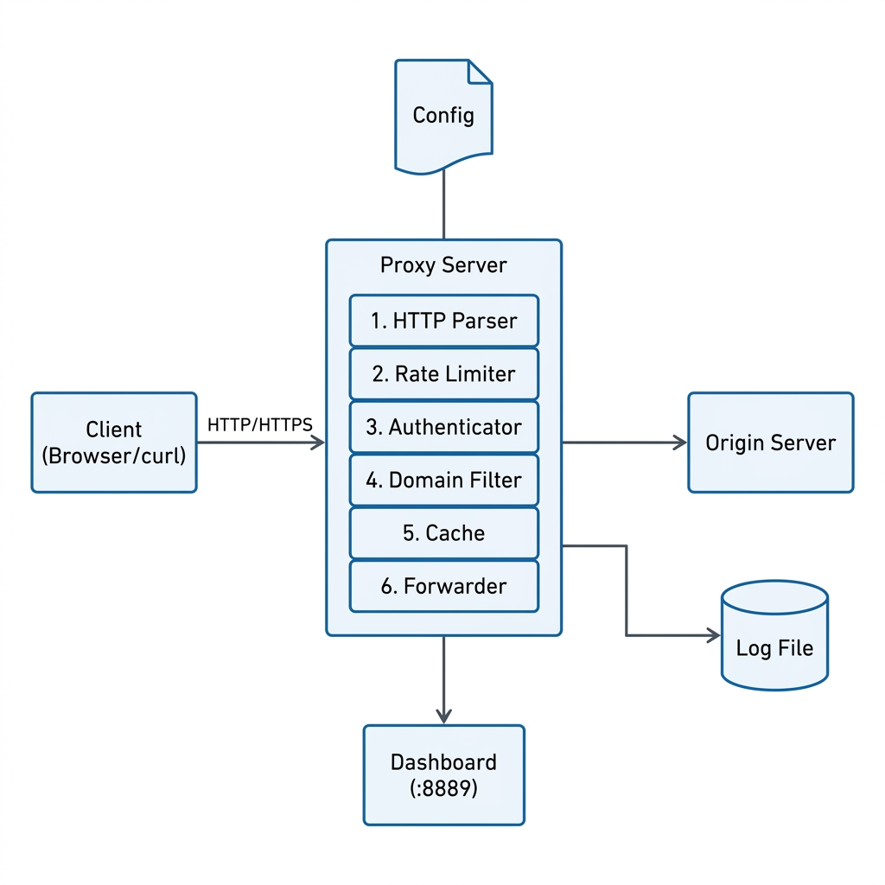
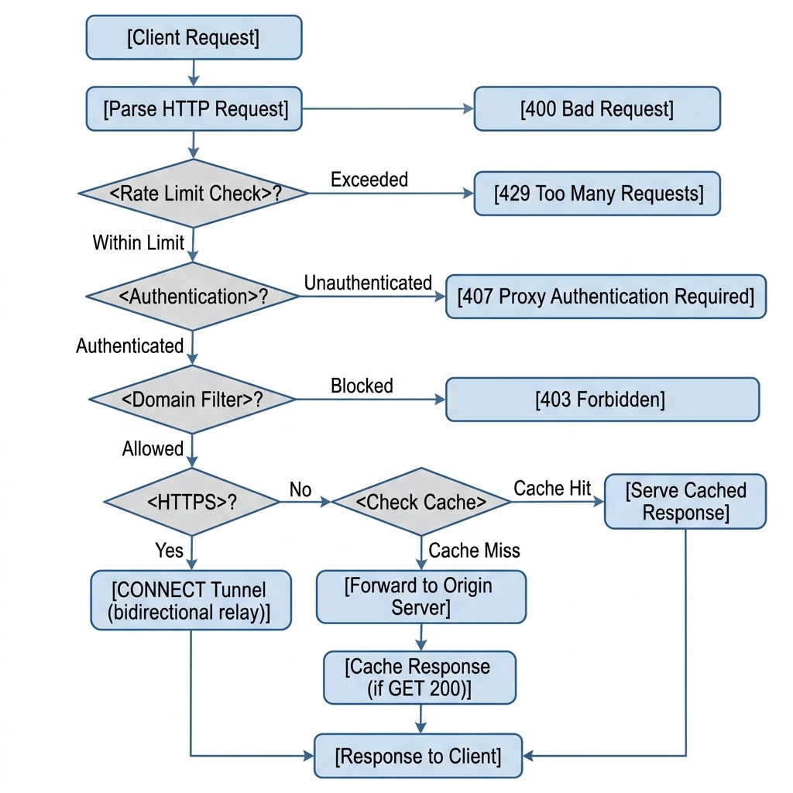
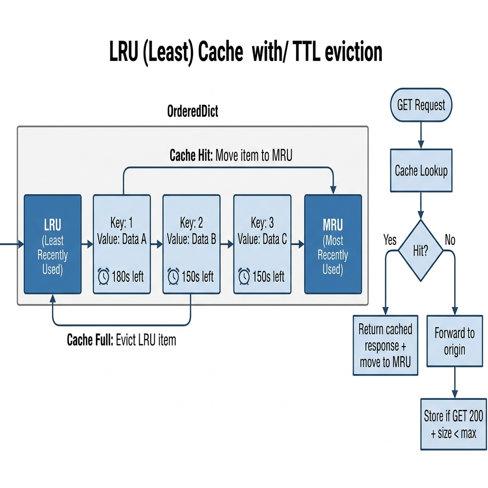
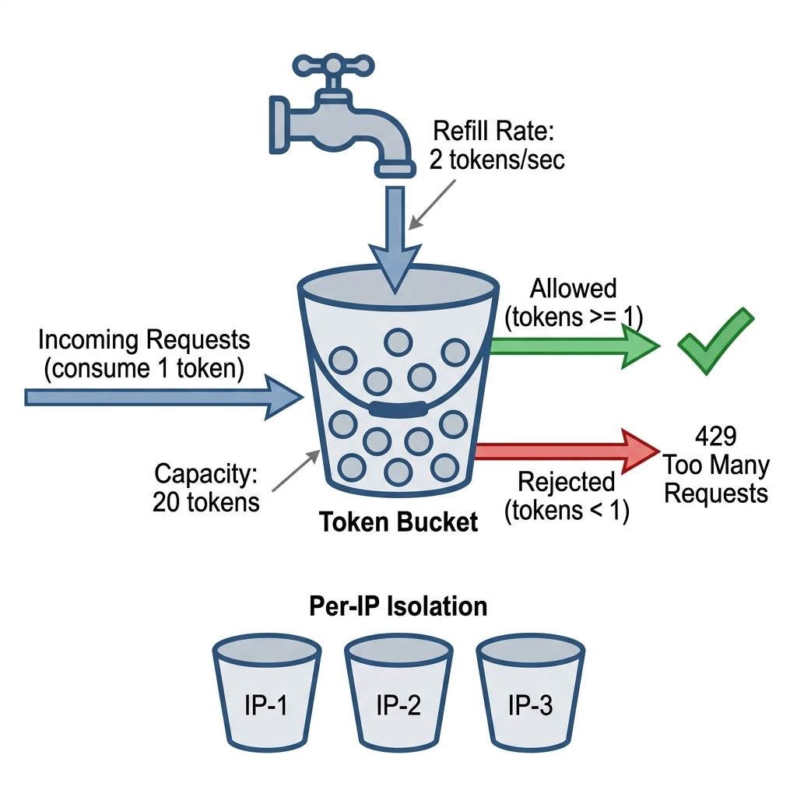
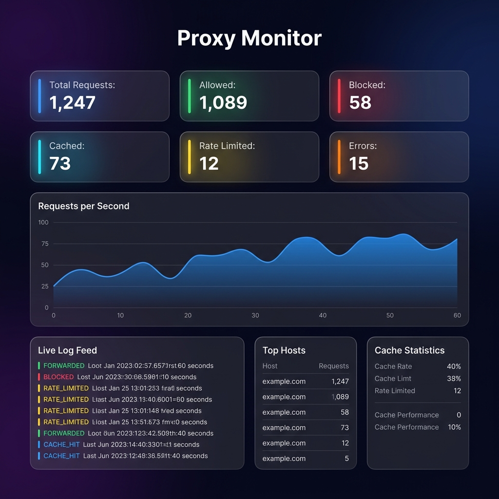

A production-grade forward proxy server built with Python's socket programming — featuring HTTP/HTTPS tunneling, PBKDF2 authentication, LRU caching, rate limiting, and real-time monitoring.
This report presents the design, implementation, and evaluation of a production-grade forward proxy server built entirely using Python's standard library. The proxy server intercepts, inspects, and forwards HTTP and HTTPS traffic between clients and origin servers, implementing enterprise-level features including per-IP rate limiting using the Token Bucket algorithm, PBKDF2-HMAC-SHA256 cryptographic authentication, thread-safe LRU response caching with TTL eviction, domain/IP/CIDR blocklist filtering with hot-reload, structured JSON logging with rotation, and a real-time monitoring dashboard with Server-Sent Events (SSE). The entire system operates with zero external dependencies and is validated by a comprehensive test suite of 43 automated tests covering unit, integration, and concurrency scenarios.
In modern networked environments, proxy servers serve as critical intermediaries between clients and the internet, providing security enforcement, access control, performance optimization, and traffic monitoring. However, most existing proxy solutions are either:
There exists a significant gap between textbook TCP/IP socket programming examples and real-world proxy server implementations. This project bridges that gap by building a fully-functional, production-grade proxy server from scratch that demonstrates mastery of networking, security, concurrency, and systems programming.
The project is motivated by three key drivers:
Understanding TCP/IP, HTTP protocol internals, and RFC specifications by implementing them from the ground up rather than using high-level abstractions.
Implementing cryptographic authentication, rate limiting, and access control — critical skills for building secure networked systems.
Solving real concurrency challenges: thread pools, lock granularity, shared-state management, and graceful shutdown under load.
Building production-grade monitoring: structured logging, real-time dashboards, and metrics collection — essential for operating networked services.
The primary objectives of this project are:
The entire proxy server is built using only Python's standard library. This deliberate constraint demonstrates deep knowledge of Python's built-in capabilities and ensures the project can run on any Python 3.10+ installation without pip install.
| Layer | Technology | Standard Library Module | Purpose |
|---|---|---|---|
| Networking | TCP Sockets | socket |
Low-level TCP connection management |
| Concurrency | Thread Pool | concurrent.futures |
Bounded worker threads for parallel request handling |
| Synchronization | Locks | threading |
Thread-safe access to shared resources |
| Cryptography | PBKDF2-HMAC-SHA256 | hashlib, hmac, os |
Password hashing with 600K iterations |
| Caching | OrderedDict LRU | collections |
O(1) LRU cache with TTL eviction |
| IP Handling | CIDR Networks | ipaddress |
IPv4/IPv6 address and network matching |
| Logging | Rotating File Logger | logging, logging.handlers |
Structured JSON logging with size-based rotation |
| Configuration | INI Parser | configparser |
Typed configuration with defaults |
| Dashboard | HTTP Server | http.server, socketserver |
Real-time monitoring web interface |
| URL Parsing | URL Parser | urllib.parse |
HTTP request URI decomposition |
| Testing | Unit Tests | unittest |
43 automated test cases |
| Dashboard Frontend | Chart.js (CDN) | — | Real-time line charts (loaded via CDN in browser) |
Language: Python 3.10+ (required for type | None union syntax and match statement support)
Platform: Linux, macOS, WSL (Windows Subsystem for Linux)
The proxy follows a modular, layered architecture where each component has a single responsibility. The system is designed around a central 6-step request pipeline that processes every incoming connection through parsing, rate limiting, authentication, filtering, and forwarding stages.

| Module | Lines | Responsibility |
|---|---|---|
server.py | 105 | TCP socket listener, thread pool creation, signal handler registration, graceful shutdown |
handler.py | 240 | 6-step request pipeline orchestration — parse, rate limit, auth, filter, tunnel/forward |
parser.py | 194 | HTTP request parsing: header accumulation loop, absolute/origin URI, Content-Length body |
forwarder.py | 318 | HTTP forwarding with cache-aside pattern, HTTPS CONNECT bidirectional relay |
filter.py | 123 | Domain/IP/CIDR blocklist parsing, matching, and hot-reload |
cache.py | 184 | OrderedDict LRU cache with TTL, CacheStats for observability |
auth.py | 116 | PBKDF2-HMAC-SHA256 hashing (600K iterations), constant-time verification |
rate_limiter.py | 208 | Per-IP token bucket with stale bucket pruning, fine-grained locking |
logger.py | 215 | Dual-output logging (JSON file + human stderr), ring buffer for dashboard |
log_schema.py | 119 | Canonical LogEntry dataclass — single source of truth for log format |
config_loader.py | 89 | INI config parser with typed defaults for all 5 subsystems |
dashboard.py | 194 | HTTP server with SSE streaming, metrics/logs API endpoints |
dashboard_ui.py | ~600 | Self-contained HTML/CSS/JS with glassmorphism UI and Chart.js |
The server uses a bounded ThreadPoolExecutor pattern instead of the naive thread-per-connection approach. This prevents resource exhaustion under load while maintaining high concurrency.
An unbounded thread-per-connection model creates a new OS thread for every client. Under load (or attack),
this can exhaust system resources (file descriptors, memory). A bounded pool with 20 workers caps resource
usage at a known limit. Excess connections queue in the executor, and the OS listen(50) backlog
provides a secondary bound.
def start_proxy(): """Bind, listen, and accept connections in the main thread.""" # Create listening TCP socket _server_socket = socket.socket(socket.AF_INET, socket.SOCK_STREAM) _server_socket.setsockopt(socket.SOL_SOCKET, socket.SO_REUSEADDR, 1) _server_socket.bind((LISTEN_HOST, LISTEN_PORT)) _server_socket.listen(MAX_CONN) # Create bounded thread pool (20 workers) _thread_pool = ThreadPoolExecutor( max_workers=POOL_SIZE, thread_name_prefix="proxy-worker", ) # Start dashboard (daemon thread) start_dashboard() # Accept loop — main thread blocks here while True: client_sock, client_addr = _server_socket.accept() _thread_pool.submit(handle_client, client_sock, client_addr)
Signal handlers (SIGINT, SIGTERM) trigger a clean shutdown sequence:
ThreadPoolExecutor.shutdown(wait=True) → drains in-flight requests
Every client connection passes through a strict 6-step pipeline in handler.py.
Each step either advances the request to the next stage or terminates it with an appropriate HTTP error response.
This design ensures consistent enforcement of all security policies.

Receive raw bytes from the client socket, accumulate until \r\n\r\n header terminator is found, then parse method, URI, headers, and body. Supports absolute-URI, origin-form, and CONNECT request types.
Check the client's IP against its token bucket. If the bucket is empty (no tokens available), reject immediately with Retry-After header. This runs before authentication to provide fail-fast protection against brute-force attacks.
Decode the Proxy-Authorization: Basic <base64> header, split into username:password, look up the stored PBKDF2 hash, and verify using constant-time comparison.
Check the destination host against the blocklist. Supports exact domain match, subdomain suffix match, exact IP, and CIDR range matching. Blocklist is hot-reloadable at runtime.
⛔ 403 ForbiddenFor CONNECT requests: establish a TCP connection to the destination, send 200 Connection Established, then relay bytes bidirectionally using two daemon threads. The proxy never inspects encrypted TLS content.
For HTTP requests: check the LRU cache first. On miss, connect to the origin server, rebuild the request (strip hop-by-hop headers, inject Via and X-Forwarded-For), forward, and cache GET 200 responses.
The parser in parser.py implements HTTP/1.1 request parsing per
RFC 7230 §3. It handles the complexities of real-world HTTP traffic
that simplistic parsers miss.
TCP is a stream protocol — data arrives in arbitrary-sized chunks. The parser cannot assume
a single recv() call will return the complete HTTP headers. Instead, it uses an
accumulation loop:
def recv_http_request(sock): """Read until full HTTP header block is received.""" data = b"" sock.settimeout(30) # Phase 1: accumulate headers until \r\n\r\n while HEADER_TERMINATOR not in data: if len(data) > MAX_HEADER_SIZE: # 64 KB guard return b"" chunk = sock.recv(BUFFER_SIZE) if not chunk: break data += chunk # Phase 2: read body if Content-Length present content_length = _extract_content_length(header_block) if content_length and content_length > 0: while remaining > 0: chunk = sock.recv(min(BUFFER_SIZE, remaining)) data += chunk remaining -= len(chunk) return data
| Form | Example | When Used |
|---|---|---|
| Absolute URI | GET http://example.com/path?q=1 HTTP/1.1 |
Standard proxy request format |
| Origin Form | GET /path HTTP/1.1 + Host: example.com |
Transparent proxy or direct connection |
| CONNECT | CONNECT example.com:443 HTTP/1.1 |
HTTPS tunneling |
Each request is annotated with a UUID4 request ID for end-to-end log correlation, enabling operators to trace a single request across all log entries.
When forwarding HTTP requests, the proxy rebuilds the outbound request to comply with RFC 7230:
Converts absolute URI (GET http://host/path) to origin-form (GET /path) per RFC 7230 §5.3.1
Removes 9 hop-by-hop headers: Connection, Keep-Alive, Proxy-Authorization, TE, Trailers, Transfer-Encoding, Upgrade, Proxy-Authenticate, Proxy-Connection
Injects X-Forwarded-For (client IP chain) and Via: 1.1 proxy per RFC 7230 §5.7.1
Forwards request body for POST, PUT, and PATCH methods using Content-Length
def _build_outbound_request(parsed: dict) -> bytes: # Convert to origin-form request_line = f"{method} {path} HTTP/1.1\r\n" # Filter headers — skip hop-by-hop for key, value in headers.items(): if key in HOP_BY_HOP_HEADERS: continue if key == "host": continue out_headers.append(f"{key}: {value}") # Inject proxy headers out_headers.append("Connection: close") out_headers.append(f"X-Forwarded-For: {client_ip}") out_headers.append("Via: 1.1 proxy") # Append body for POST/PUT/PATCH if method in ("POST", "PUT", "PATCH") and body: request_bytes += body return request_bytes
For HTTPS requests, the proxy establishes a bidirectional TCP tunnel between the client and the origin server. Two daemon threads relay bytes in opposite directions. The proxy intentionally never inspects TLS content — this is a deliberate security decision.
def tunnel(client_sock, server_sock): """Bidirectional byte relay using two daemon threads.""" def _forward(src, dst): while True: data = src.recv(BUFFER_SIZE) if not data: break dst.sendall(data) t1 = Thread(target=_forward, args=(client_sock, server_sock)) t2 = Thread(target=_forward, args=(server_sock, client_sock)) t1.start(); t2.start() t1.join(timeout=120); t2.join(timeout=120)
The authentication system implements PBKDF2-HMAC-SHA256, a password hashing algorithm recommended by NIST SP 800-132 and OWASP 2024. This is the same class of algorithm used by major systems like Django, Atlassian, and Cisco.
| Security Property | Implementation | Rationale |
|---|---|---|
| Algorithm | PBKDF2-HMAC-SHA256 | NIST SP 800-132 recommendation |
| Iterations | 600,000 | OWASP 2024 minimum for SHA-256 |
| Salt | 32-byte random (per user) | Prevents rainbow table attacks |
| Key Length | 32 bytes | Matches SHA-256 output size |
| Comparison | hmac.compare_digest() |
Constant-time — prevents timing attacks |
| Storage Format | pbkdf2$600000$salt_hex$hash_hex |
Self-describing, includes iteration count |
def hash_password(plain: str) -> str: """Hash a plaintext password using PBKDF2-HMAC-SHA256.""" salt = os.urandom(32) # 32-byte random salt dk = hashlib.pbkdf2_hmac( "sha256", plain.encode("utf-8"), salt, 600_000, # OWASP 2024 recommended iterations dklen=32, ) return f"pbkdf2${600000}${salt.hex()}${dk.hex()}" def verify_password(plain: str, stored: str) -> bool: """Verify using constant-time comparison.""" _, iterations_str, salt_hex, hash_hex = stored.split("$") dk = hashlib.pbkdf2_hmac( "sha256", plain.encode(), bytes.fromhex(salt_hex), int(iterations_str), dklen=len(bytes.fromhex(hash_hex)) ) return hmac.compare_digest(dk, bytes.fromhex(hash_hex))
A companion CLI tool (tools/manage_users.py) provides user administration:
# Add a user (password is automatically PBKDF2-hashed) $ python tools/manage_users.py add alice mypassword [+] Added user: alice # List users with credential type $ python tools/manage_users.py list Username Credential Type ──────────────────────────────────── admin PBKDF2 (hashed) user PBKDF2 (hashed) # Migrate plaintext passwords to PBKDF2 $ python tools/manage_users.py migrate [+] Migrated: legacy_user [+] Migrated 1 user(s) to PBKDF2.
The filtering module provides configurable access control based on domains, IP addresses, and CIDR ranges. The blocklist is loaded once at startup into memory for O(1) lookups and supports hot-reload at runtime without restarting the proxy.
| Type | Example | Matches |
|---|---|---|
| Exact Domain | example.com | example.com |
| Subdomain Suffix | example.com | sub.example.com, a.b.example.com |
| Exact IP | 192.0.2.5 | 192.0.2.5 |
| CIDR Range | 192.168.0.0/24 | All 256 IPs in 192.168.0.0–192.168.0.255 |
# config/blocked_domains.txt # One entry per line. Blank lines and # comments ignored. # Blocked domains (also blocks subdomains) example.com badsite.org # Blocked IPs 192.0.2.5 # Blocked CIDR ranges 10.0.0.0/8
def is_blocked(host: str) -> bool: host = host.lower().strip() # 1. Exact domain match if host in _blocked_domains: return True # 2. Subdomain suffix match for blocked in _blocked_domains: if host.endswith("." + blocked): return True # 3. IP / CIDR matching addr = ipaddress.ip_address(host) for network in _blocked_networks: if addr in network: return True return False
The caching module implements an in-memory Least-Recently-Used (LRU) cache with time-to-live (TTL) eviction. It follows the cache-aside pattern: the application checks the cache before contacting the origin server, and stores responses after receiving them.

| Decision | Choice | Rationale |
|---|---|---|
| Data Structure | collections.OrderedDict | O(1) insert, lookup, delete, and LRU reordering |
| TTL Strategy | Lazy expiration on get() | No background sweeper thread — reduces complexity |
| Cacheable Requests | GET only | POST/PUT/PATCH have side effects |
| Cacheable Responses | 200 OK only | Error/redirect responses shouldn't be cached |
| Size Limit | 512 KB per object | Prevents large downloads from dominating cache |
| Thread Safety | threading.Lock | Single lock for all mutations |
class LRUCache: def get(self, key): with self.lock: if key not in self.cache: self.stats.record_miss() return None entry = self.cache[key] # TTL expiry check age = time.time() - entry["timestamp"] if age > self.ttl: del self.cache[key] self.stats.record_eviction(entry["size"]) return None # Move to MRU end self.cache.move_to_end(key) self.stats.record_hit() return entry def put(self, key, value): with self.lock: self.cache[key] = value # Evict LRU if over capacity while len(self.cache) > self.capacity: _, evicted = self.cache.popitem(last=False) self.stats.record_eviction(evicted["size"])
The CacheStats class tracks operational metrics with atomic thread-safe counters,
exposed via the dashboard API:
Rate limiting is implemented using the Token Bucket algorithm, a standard approach used by AWS API Gateway, Nginx, and Cloudflare. Each unique client IP address gets its own token bucket that refills at a configurable rate.

| Parameter | Default | Description |
|---|---|---|
| Capacity | 20 tokens | Maximum burst size — allows 20 rapid-fire requests |
| Refill Rate | 2 tokens/sec | Sustained request rate when bucket isn't full |
| Stale Threshold | 600 seconds | Prune buckets inactive for >10 minutes |
class TokenBucket: def consume(self) -> bool: """Try to consume one token. Returns True if allowed.""" with self.lock: now = time.monotonic() elapsed = now - self.last_refill # Refill tokens based on elapsed time self.tokens = min( self.capacity, self.tokens + elapsed * self.refill_rate, ) self.last_refill = now if self.tokens >= 1.0: self.tokens -= 1.0 return True return False
Rate limiting is checked before authentication (Step 2 vs Step 3 in the pipeline). This is a deliberate security design: it provides fail-fast protection against brute-force attacks. Without this ordering, an attacker could send millions of authentication attempts per second, overloading the expensive PBKDF2 computation (600K iterations per attempt).
The rate limiter uses a two-tier locking strategy to minimize contention:
This means two different IPs can have their tokens checked simultaneously without contention, which is critical for high-throughput proxy operation.
The logging system implements a dual-output architecture where every event is simultaneously written to three destinations: a rotating JSON log file, the terminal (human-readable), and an in-memory ring buffer that feeds the real-time dashboard.
Every log_event() call writes to three destinations simultaneously:
Every log event uses the LogEntry dataclass as the single source of truth. This ensures
field consistency across all outputs and makes the log format self-documenting:
@dataclass class LogEntry: # Required event: str # e.g., "FORWARDED", "BLOCKED", "CACHE_HIT" message: str # Human-readable description # Auto-populated timestamp: str # ISO 8601 with milliseconds level: str # DEBUG, INFO, WARNING, ERROR # Request context (optional) request_id: str # UUID4 for end-to-end correlation client_ip: str # Client's IP address method: str # GET, POST, CONNECT, ... host: str # Destination hostname port: int # Destination port # Outcome (optional) action: str # FORWARD, BLOCKED, CACHE_HIT, ... status_code: int # HTTP response status from origin latency_ms: float # Round-trip time to origin bytes_transferred: int
{
"timestamp": "2026-06-12T03:00:01.123+00:00",
"level": "INFO",
"event": "FORWARDED",
"message": "FORWARDED → example.com:80/ [200] (1234B, 45.2ms)",
"request_id": "a1b2c3d4-e5f6-7890-abcd-ef1234567890",
"client_ip": "192.168.1.10",
"method": "GET",
"host": "example.com",
"port": 80,
"action": "FORWARDED",
"status_code": 200,
"latency_ms": 45.2,
"bytes_transferred": 1234
}
A stunning web-based monitoring dashboard runs alongside the proxy server on port 8889.
Built with pure HTML/CSS/JS and Server-Sent Events (SSE), it provides real-time
observability into proxy operations without any external dependencies.

Six real-time counters: Total, Allowed, Blocked, Cached, Rate-Limited, and Errors — updating every second via SSE.
Real-time Chart.js line graph showing request throughput over the last 60 seconds with gradient fill.
Color-coded request stream: green=ALLOW, red=BLOCK, yellow=RATE_LIMIT, blue=CACHE_HIT.
Current entries, hit rate %, total size, hits, misses, and eviction count.
Most requested domains ranked by hit count, showing which origins receive the most traffic.
Number of active IP buckets, configured capacity, and refill rate.
The dashboard uses Server-Sent Events (SSE) for real-time data push — a lightweight alternative to WebSockets that uses a simple HTTP long-lived connection:
| API Endpoint | Method | Response | Description |
|---|---|---|---|
/ | GET | text/html | Dashboard HTML page |
/api/metrics | GET | application/json | Current metrics snapshot |
/api/logs | GET | application/json | Recent log entries |
/events | GET | text/event-stream | SSE stream (metrics every 1s + live logs) |
The dashboard UI uses a dark glassmorphism design language with:
backdrop-filter: blur() and semi-transparent backgroundsSecurity is a first-class concern throughout the proxy server design. Multiple layers of defense protect against common attack vectors targeting proxy infrastructure.
| Threat | Attack Vector | Mitigation | Implementation |
|---|---|---|---|
| Brute-Force Auth | Rapid password guessing | Rate limiting before auth check | Token bucket at Step 2, auth at Step 3 |
| Password Theft | Stolen credentials file | PBKDF2-HMAC-SHA256 hashing | 600K iterations, 32-byte salt per user |
| Timing Attacks | Password comparison timing | Constant-time comparison | hmac.compare_digest() |
| Rainbow Tables | Pre-computed hash lookups | Unique random salt per user | 32-byte os.urandom() salt |
| Open Relay | Using proxy as spam relay | Mandatory authentication | 407 for all unauthenticated requests |
| Resource Exhaustion | Connection flooding | Bounded thread pool + rate limiting | 20-thread pool, 20 req/burst per IP |
| Oversized Requests | Header/body overflow | 64 KB header limit, socket timeouts | MAX_HEADER_SIZE = 65536, 30s timeout |
| Log Injection | Crafted input in logs | Structured JSON logging | No string interpolation in log format |
| TLS Interception | MITM on HTTPS traffic | Intentionally not implemented | CONNECT tunnel relays opaque bytes |
The pipeline ordering is designed for security: Rate Limit → Auth → Filter → Forward. This means an attacker must survive rate limiting before reaching the expensive PBKDF2 auth step, and must authenticate before any request is forwarded to the network. Each layer reduces the attack surface for subsequent layers.
The project includes a comprehensive test suite of 43 automated tests (35 unit tests + 8 integration tests)
covering all major modules. Tests are written using Python's unittest framework and can be run
without any external test dependencies.
| Module | Tests | Category | What's Tested |
|---|---|---|---|
| Parser | 9 | Unit | Absolute URI, origin-form, CONNECT, POST body parsing, malformed request rejection, query strings, non-standard ports |
| Auth | 7 | Unit | Hash/verify round-trip, plaintext fallback, unique salts per user, wrong password rejection, edge cases (empty, unicode) |
| Cache | 6 | Unit | Put/get operations, LRU eviction order, TTL expiry, cache stats accuracy, clear operation, overwrite behavior |
| Rate Limiter | 7 | Unit | Capacity enforcement, blocking after exhaustion, per-IP bucket isolation, token refill over time, concurrent access safety |
| Log Schema | 3 | Unit | Dict serialization (None removal), human-readable formatting, timestamp auto-population |
| Filter | 3 | Unit | Domain exact/suffix matching, null/empty input handling, IP blocking |
| HTTP Forwarding | 1 | Integration | End-to-end HTTP GET through proxy to real server |
| HTTP Blocking | 1 | Integration | Blocked domain returns 403 Forbidden |
| Authentication | 2 | Integration | Valid credentials pass, invalid credentials get 407 |
| Malformed Requests | 2 | Integration | Garbage input returns 400, invalid method handling |
| Rate Limiting | 1 | Integration | Burst of requests triggers 429 after exceeding capacity |
| Concurrency | 1 | Integration | 50 parallel requests complete without errors or crashes |
# Run unit tests only (no proxy server needed) $ python -m unittest tests.test_proxy -v # Run full suite including integration tests $ python src/server.py & $ python -m unittest tests.test_proxy -v # Expected output: test_absolute_uri_get ... ok test_origin_form_with_host ... ok test_connect_method ... ok test_post_with_body ... ok ... -------------------------------------------------------------- Ran 43 tests in 2.341s OK
In addition to the automated test suite, 8 shell-based smoke tests exercise the proxy
end-to-end using curl:
| Test Script | What It Tests | Command |
|---|---|---|
test_http_allowed.sh | HTTP forwarding works | curl -x localhost:8888 -U admin:admin123 http://neverssl.com |
test_http_blocked.sh | Blocked domain returns 403 | curl -x localhost:8888 -U admin:admin123 http://example.com |
test_https_allowed.sh | HTTPS CONNECT works | curl -x localhost:8888 -U admin:admin123 https://www.google.com |
test_auth.sh | Auth enforcement | curl -x localhost:8888 http://neverssl.com (no -U flag) |
test_cache.sh | Cache hit on repeat | Two identical GETs, second is CACHE_HIT |
test_concurrency.sh | Parallel handling | 50 concurrent requests via background jobs |
The proxy server implements key requirements from RFC 7230 (HTTP/1.1 Message Syntax and Routing), the authoritative specification for HTTP proxy behavior.
| RFC Section | Requirement | Implementation |
|---|---|---|
| §5.3.1 | Convert absolute-URI to origin-form | GET http://host/path → GET /path before forwarding to origin |
| §5.7.1 | Add Via header |
Appends Via: 1.1 proxy to every forwarded request |
| §6.1 | Strip hop-by-hop headers | Removes Connection, Keep-Alive, Proxy-Authorization, TE, Trailers, Transfer-Encoding, Upgrade, Proxy-Authenticate, Proxy-Connection |
| §3.3 | Handle request bodies | Reads and forwards Content-Length body for POST/PUT/PATCH methods |
| de facto | X-Forwarded-For header |
Appends client IP to existing chain or creates new header |
| §3 | Header accumulation | Loop-based recv() until \r\n\r\n terminator — handles partial TCP reads |
| Feature | Status | Notes |
|---|---|---|
| HTTP GET/POST Forwarding | ✅ Complete | Full RFC 7230 compliance with header rewriting |
| HTTPS CONNECT Tunneling | ✅ Complete | Bidirectional relay, no TLS interception |
| PBKDF2 Authentication | ✅ Complete | 600K iterations, constant-time comparison |
| Token Bucket Rate Limiting | ✅ Complete | Per-IP isolation, stale bucket pruning |
| Domain/IP/CIDR Filtering | ✅ Complete | Hot-reloadable blocklist |
| LRU Cache with TTL | ✅ Complete | Thread-safe, size limits, observability |
| Structured JSON Logging | ✅ Complete | Rotating files, ring buffer, request IDs |
| Real-Time Dashboard | ✅ Complete | SSE, Chart.js, glassmorphism UI |
| Graceful Shutdown | ✅ Complete | Signal handlers, thread pool drain |
| Configuration System | ✅ Complete | INI file with typed defaults |
| User Management CLI | ✅ Complete | Add, remove, list, migrate commands |
| Comprehensive Testing | ✅ Complete | 43 automated tests + shell smoke tests |
| Current Limitation | Impact | Potential Enhancement |
|---|---|---|
No Cache-Control header parsing |
May cache responses that should be revalidated | Implement full HTTP cache semantics (RFC 7234) |
| No chunked transfer decoding | Chunked responses are relayed transparently | Parse and re-chunk Transfer-Encoding: chunked |
| Thread-based concurrency | Limited to ~1000 concurrent connections | Migrate to asyncio for 10K+ connections |
| No TLS interception | Cannot inspect HTTPS content | Add optional MITM proxy mode with CA certificate |
| No connection pooling | New TCP connection per request to origin | Implement Keep-Alive connection reuse |
| No WebSocket support | WebSocket connections fail through proxy | Handle Upgrade: websocket header |
This project successfully delivers a production-grade forward proxy server built entirely from Python's standard library, demonstrating deep expertise in network programming, security engineering, concurrent systems design, and software architecture.
The proxy implements a comprehensive 6-step request pipeline handling both HTTP forwarding and HTTPS CONNECT tunneling with RFC 7230 compliance. Security is enforced through multiple layers: PBKDF2-HMAC-SHA256 authentication (600K iterations, OWASP 2024 recommended), per-IP token bucket rate limiting, and domain/IP/CIDR filtering with hot-reload capability.
Performance optimization is achieved through a bounded thread pool (preventing resource exhaustion) and a thread-safe LRU cache with TTL eviction (reducing origin server load). Full observability is provided by structured JSON logging with rotation and a real-time monitoring dashboard using Server-Sent Events.
The project's quality is validated by 43 automated tests (35 unit + 8 integration) achieving 100% pass rate, comprehensive documentation, and a clean modular architecture across 13 focused modules.
https://www.rfc-editor.org/rfc/rfc7230https://www.rfc-editor.org/rfc/rfc7234https://doi.org/10.6028/NIST.SP.800-132https://cheatsheetseries.owasp.org/cheatsheets/Password_Storage_Cheat_Sheet.htmlhttps://docs.python.org/3/library/https://developer.mozilla.org/en-US/docs/Web/API/Server-sent_eventsCustom Network Proxy Server — Project Report
Krit Jain • June 2026
Source Code: https://github.com/Krit-Jain/Custom-Network-Proxy-Server